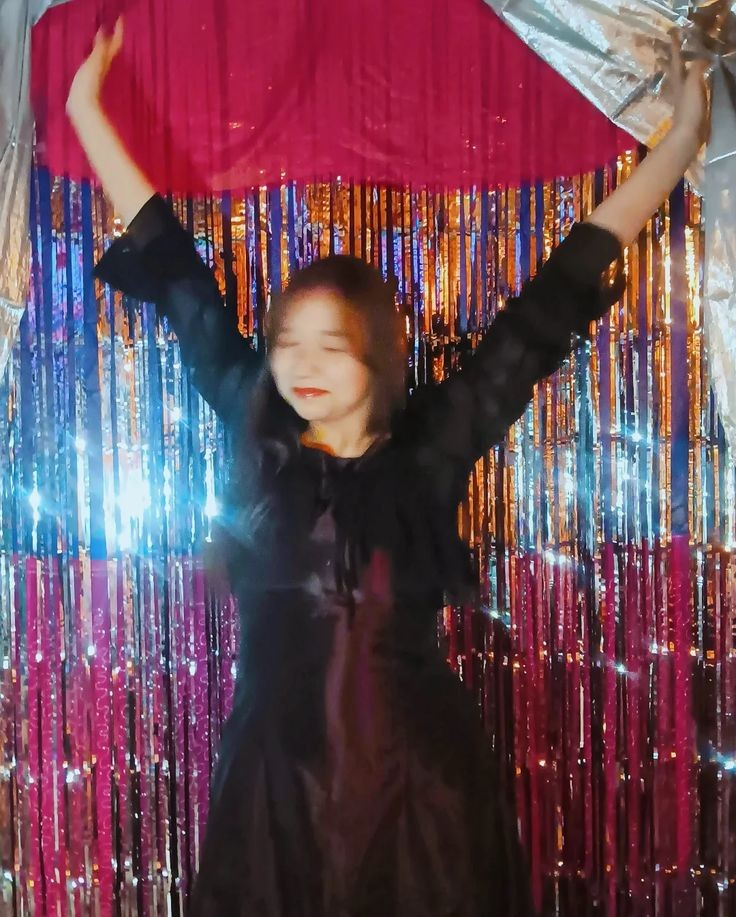
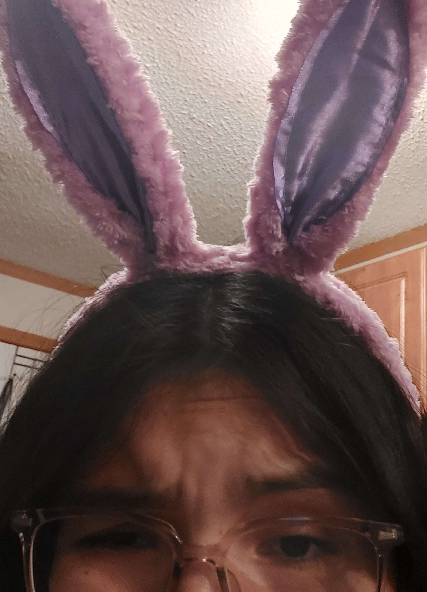
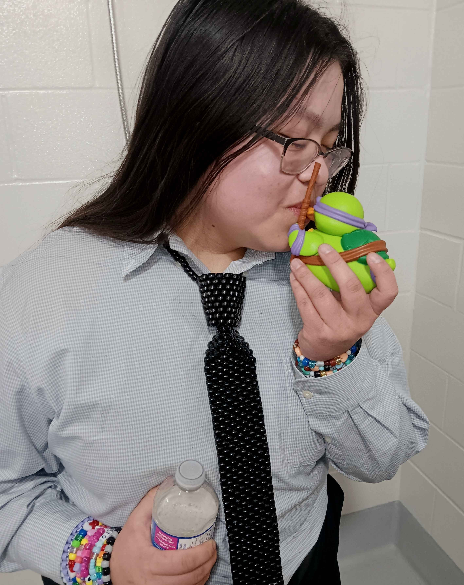
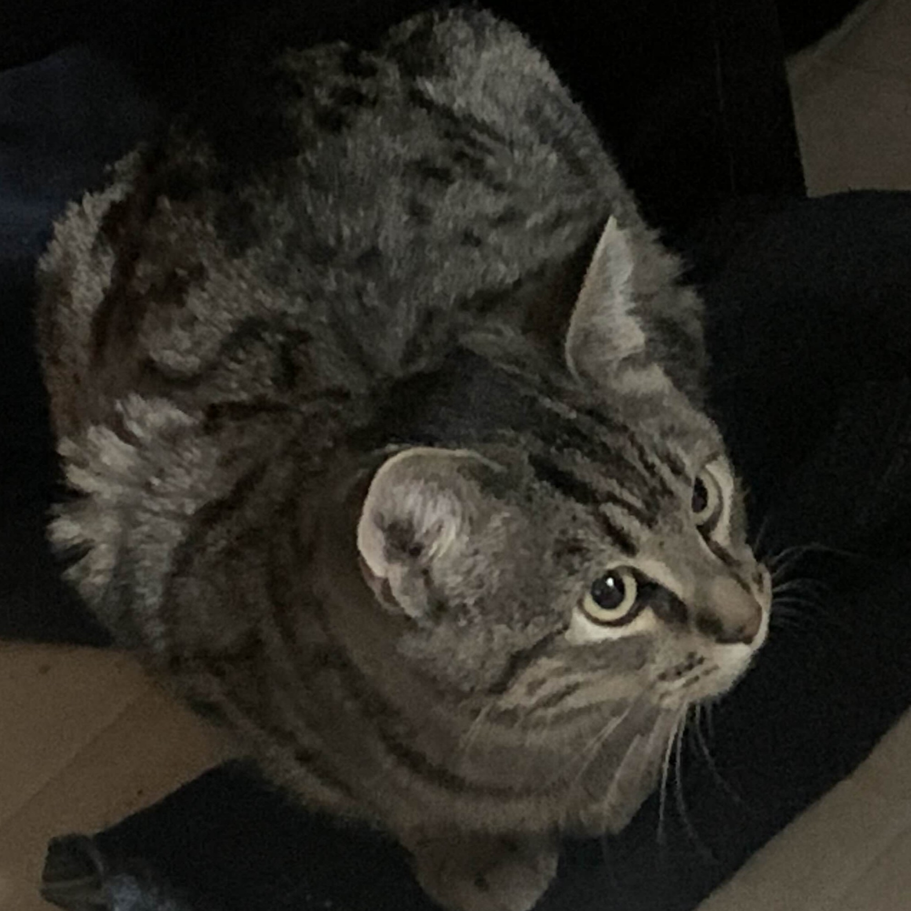

A work in progress of the collection of our media!
A web series about two best friends getting into hijinks.
With special guest appearances by Sticky
It's similar to "Jake and Amir"


Images sourced from Angel's Pinterest and Keira herself.
A web series about a silly girl who spreads joy and whimsy wherever she goes, encouraging others to do the same.
It's not entirely sure if she's actually a human. She might be part alien!
Who knows!
We'll just have to wait and see in The Silliest Girl in The World


Both images sourced from Hayleigh.